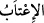

57. Artık o gün, zulmedenlerin (beyan edecekleri) mazeretleri fayda vermeyeceği
gibi, onlardan Allâh’ı hoşnut etmeye çalışmaları da istenmez.
“Artık o gün,” yâni kıyâmet günü “zulmedenlerin” Allâh’a ortak koşanların “(beyan
edecekleri) mazeretleri” özürleri “fayda vermeyeceği gibi…”
Özür, “Yapmadım” veya “Şunun için yaptım” diyerek insanın günahlarını silecek
çareler araması, kendisini günahkâr olmaktan çıkaracak sözleri zikretmesi ya da
“yaptım, ama bir daha yapmayacağım” ve benzeri sözler söylemesidir. Bu üçüncüsü,
tevbedir. Her tevbe bir özürdür, her özür ise tevbe değildir. Özür kelimesinin aslı, necis
şey anlamındaki “__WORD__dandır. Çocuğu temizleyip necâsetini giderdim anlamında “__WORD__ denir. Yine falan kimseyi affetmek sûretiyle günahının necâsetini giderdim
anlamında “__WORD__ denir. el-Müfredât’ta böyle geçmektedir. Keşfü’l-esrâr’da ise bu
kelimenin örtü anlamındaki “__WORD__dan alındığını söyler.
“Onlardan Allâh’ı hoşnut etmeye çalışmaları da istenmez.” “__WORD__, öfkeyi ve
sertliği gidermek, hoşnut kılmaktır. “__WORD__ ise bunu istemek, yâni bir kimseden
senden hoşnut olmasını istemektir. Yâni dünyâda dâvet edildikleri gibi kendi
üzerlerindeki öfkenin kalkmasını gerektirecek tevbe ve tâat gibi bir şeye dâvet
olunmazlar. Çünkü o zaman tevbe de tâat de kabul edilmez. Kezâ kaçırdıkları îman ve
amel fırsatını yakalamak için dünyâya dönmeleri de mümkün değildir.
Şeyh Sa‘dî (k.s.) der ki:
Gözün varken şimdi yaş dök,
Ağzında dilin varken şimdi af dile.
Günahlarının özrünü şimdi dilemelisin,
Nefs-i nâtıka söylemekten âciz kaldığı zaman değil.
Sakın kıyâmet şehrine eli boş gitme;
Orada hasretle oturman için bir sebep yoktur.
Âyette insanın bedeninin ölünün kabri gibi olduğuna işâret vardır. Ölüler tekrar
dirilme gününde fânî ve geçici dünyâda geçirdikleri günleri, haşr sabahına nisbetle
müddetleri uzun bile olsa kısa bulurlar. Çünkü haşr günü uzun bir gündür. Hz.
Peygamber (s.a.): “Dünyâ bir saattir. Sen onu tâatle geçir.”[55] buyurmuştur.
Bir âbidin ölüm anı gelip çattığında şöyle dedi: “Benim üzüntüm hüzünler, kederler,
hatâlar ve günahlar yurdu olan dünyâya değil. Benim üzüntüm ancak uyuyarak
geçirdiğim geceye, oruçsuz geçirdiğim güne ve Allah Teâlâ’nın zikrinden gâfil olduğum
saatedir.”
İbn Abbas (r.a.)’ın şöyle dediği rivâyet edilmiştir: “Dünyâ, âhiret cumalarından bir
cuma (hafta) gibi olup yedi bin senedir. Onun altı bin yüz senesi geçti. Dünyânın üzerine